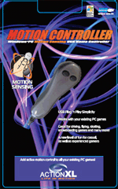

Both wired and wireless USB motion controllers from ActionXL can be used as dummy handbells with Handbell Manager and Abel or Beltower. To help you decide which would suit you better, see Wired or Wireless?
The wireless controllers are no longer manufactured, but wired controllers are still available for £10.99 each, plus £4.00 per order for postage and packing to the UK by first class post.
Note: Controllers are priced individually, so please ensure that you specify a quantity of 2 if you want a pair.
To obtain ActionXL motion controllers from changeringing.co.uk please email as they are no longer available for online order.
|  |